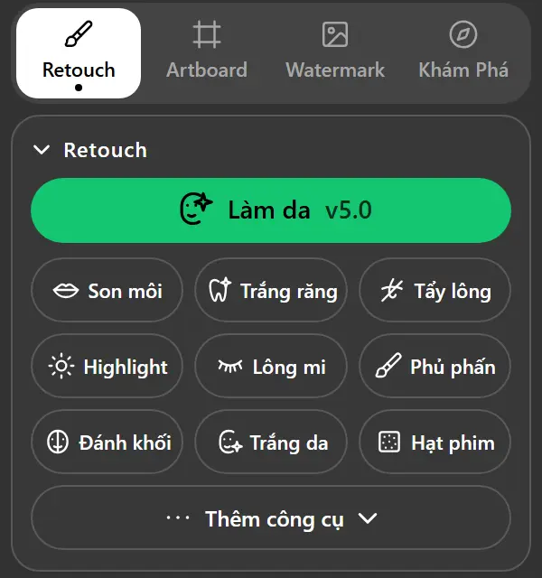
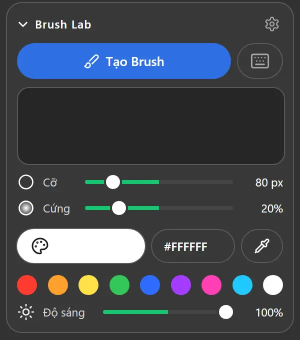
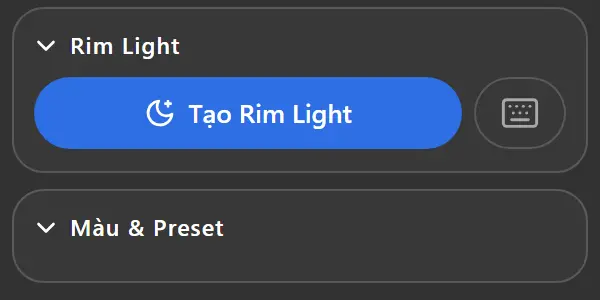

Panel Adobe Photoshop · 100% tiếng Việt
Tối ưu hậu kỳ.Thỏa sức sáng tạo.
Tối ưu hậu kỳ cho designer Việt: bấm là mịn, bấm là sáng, bấm là xong. Không thích thì Ctrl+Z, vì mọi thứ đều nằm ở layer riêng.
- 10công cụ Retouch
- 165màu MHK
- 27mẫu Artboard
- 54mẫu Watermark



Mọi thứ cho một bức ảnh
Làm da, son môi, rim light, artboard album và watermark: tất cả trong một panel.
Mười công cụ Retouch
Làm da, Son môi, Trắng răng, Tẩy lông, Highlight, Lông mi, Phủ phấn, Đánh khối, Trắng da, Hạt phim.
Brush Lab
Bật Shape Dynamics và Pen Pressure bằng một nút, chỉnh cỡ, độ cứng, màu cọ ngay trên panel.
Rim Light
Một nút tạo Rim Light, rồi chọn màu bằng hex, hút màu hoặc 8 màu mẫu.
Watermark EXIF
Đọc EXIF của ảnh đang mở rồi thêm watermark kiểu Xiaomi Leica, hoặc tự tạo mẫu riêng.
Không phá ảnh gốc
Mỗi thao tác tạo layer và mask riêng, chạy trên RGB 8/16-bit.
165 màu MHK
6 bộ màu bấm để áp, hoặc Mix tối đa 4 màu. File .xmp trong presets/ tự thành nút.
27 mẫu Artboard
Album Facebook MHK, khổ YouTube hoặc khổ tuỳ chỉnh, kèm guide vùng an toàn.
54 mẫu Watermark
Mẫu gốc Xiaomi Leica chỉnh được tên máy, địa chỉ, ISO, logo, bố cục và nền.
Phím tắt Action
Gán F2–F12, kèm Shift hoặc Ctrl, cho Tạo Brush và Tạo Rim Light.
Cập nhật một chạm
Tải bản mới từ GitHub và kiểm chữ ký Ed25519 trước khi cài.
Video hướng dẫn
Xem cách cài đặt và dùng SCCTLM_Foto từng bước trong Photoshop.
Không xem được? Mở trên YouTube.
Ba bước là xong
Tải về
Lấy bản mới nhất ở GitHub Releases.
Cài đặt
Đóng Photoshop, rồi chạy file cài đặt:
Windowsinstall\Cai-dat-SCCTLM_Foto.batmacOSbash install/Cai-dat-SCCTLM_Foto.commandRetouch
Mở Photoshop, vào Window › Extensions › SCCTLM_Foto.
Cần Photoshop CC 2015 trở lên, Windows 10/11 64-bit hoặc macOS 10.13+, ảnh ở chế độ RGB. Cài thủ công có trong hướng dẫn trên GitHub.
Hỏi đáp
Cài trên Mac bị lỗi?
Với Mac chip Apple Silicon, hãy bật Rosetta: chuột phải Photoshop trong Applications › Get Info › tick Open using Rosetta, rồi mở lại Photoshop. Chưa có Rosetta thì chạy softwareupdate --install-rosetta --agree-to-license.
Panel không có trong Window › Extensions?
Windows: nhấp đúp install\Fix-CEP-SCCTLM_Foto.reg. macOS: chạy lại bash install/Cai-dat-SCCTLM_Foto.command. Sau đó khởi động lại Photoshop.
Bấm nút mà không có gì xảy ra?
Mở ảnh và chuyển sang Image › Mode › RGB Color. Panel chỉ chạy trên ảnh RGB.
Panel chưa ký số, có an toàn không?
Script cài đặt bật PlayerDebugMode, cho phép mọi extension CEP chưa ký chạy trên tài khoản đó. Hãy tắt lại khi gỡ cài đặt. Bản cập nhật luôn được kiểm chữ ký Ed25519 trước khi cài.
Ảnh của tôi có bị gửi đi đâu không?
Không. Panel chạy cục bộ, chỉ kết nối GitHub để cập nhật và YouTube cho tab Khám phá.
Photoshop hỏi “Remove the conflicting action shortcuts?”
Chọn No để phím F2–F4 vẫn chạy Action của bạn.
Retouch nhanh hơn, ngay hôm nay
Miễn phí tải về. Chạy trên máy của bạn, không gửi ảnh đi đâu. Nếu panel giúp ích cho công việc, quét mã QR (TPBank hoặc Techcombank) để ủng hộ SCCTLM.
Cảm ơn người đã ủng hộ
Những người đã đồng hành cùng SCCTLM_Foto.
- Nguyễn Thành Lâm
- Long Trương
- Trung Lê
- Dương Gia Bảo
- Thanh Tùng
- Vu Dinh Hoang
- Vu Hoang Thanh
- EditLab
- Ngo Quang Xo
- Nguyen Dinh Bac
- Pham Anh Thu
Và xin gửi lời cảm ơn chân thành tới những người đã ủng hộ ẩn danh. Dù không để lại tên, sự đồng hành của bạn vẫn là động lực rất lớn để dự án tiếp tục phát triển.